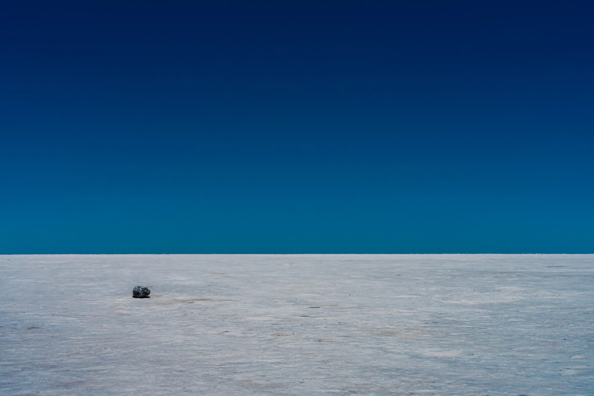
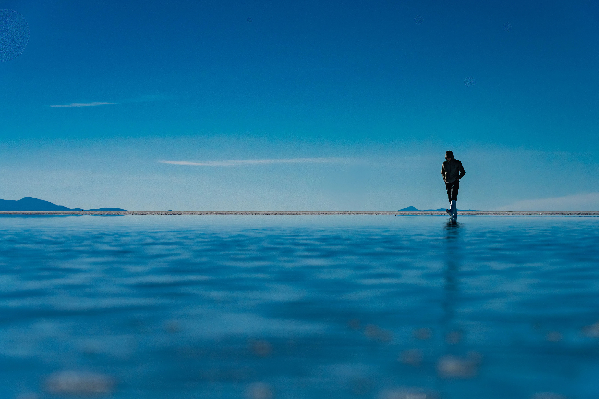
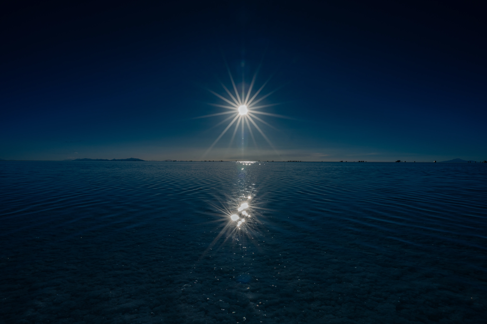
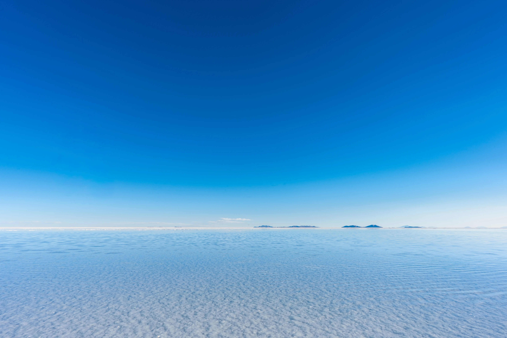
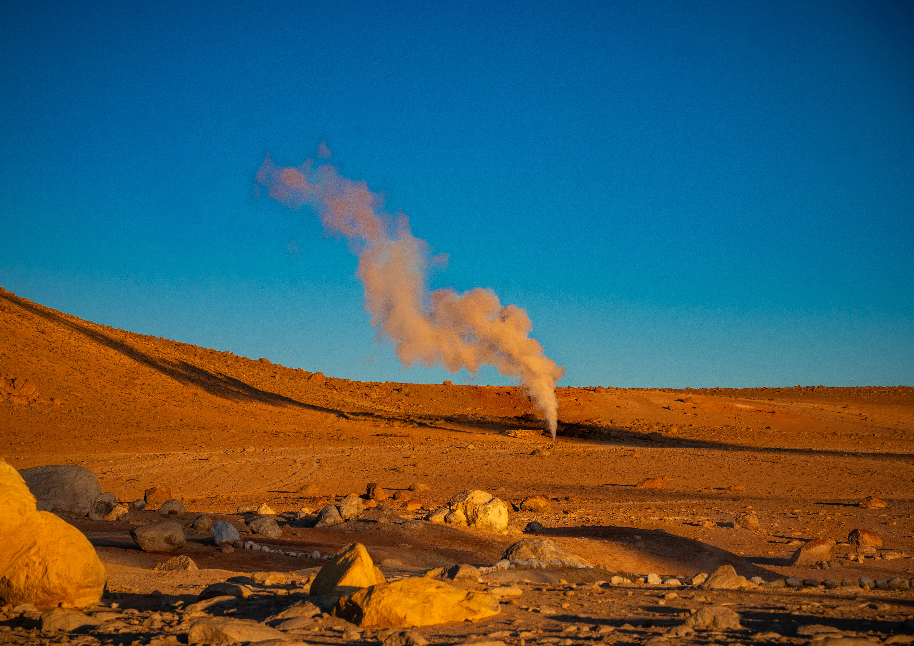
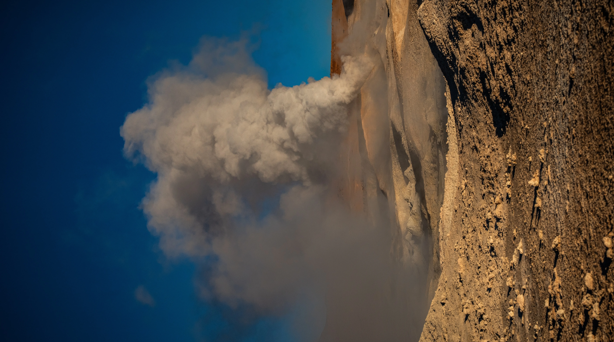
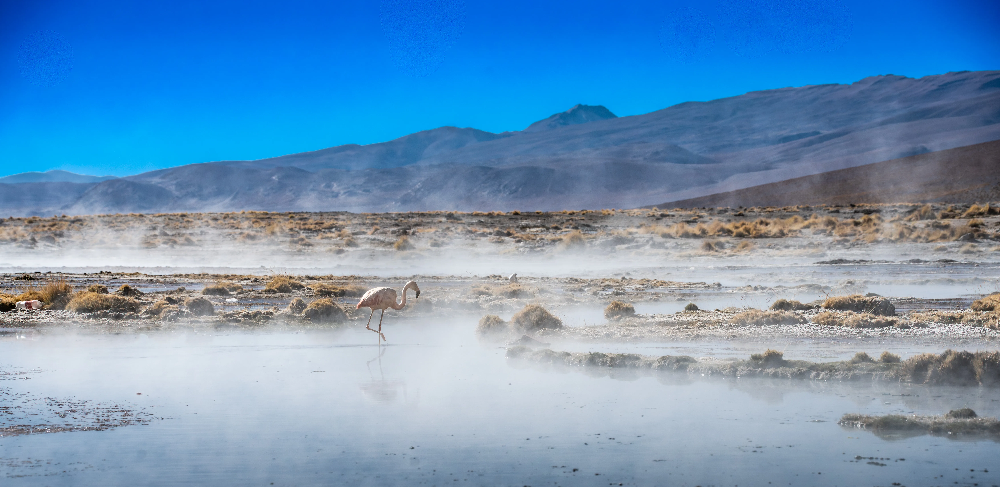
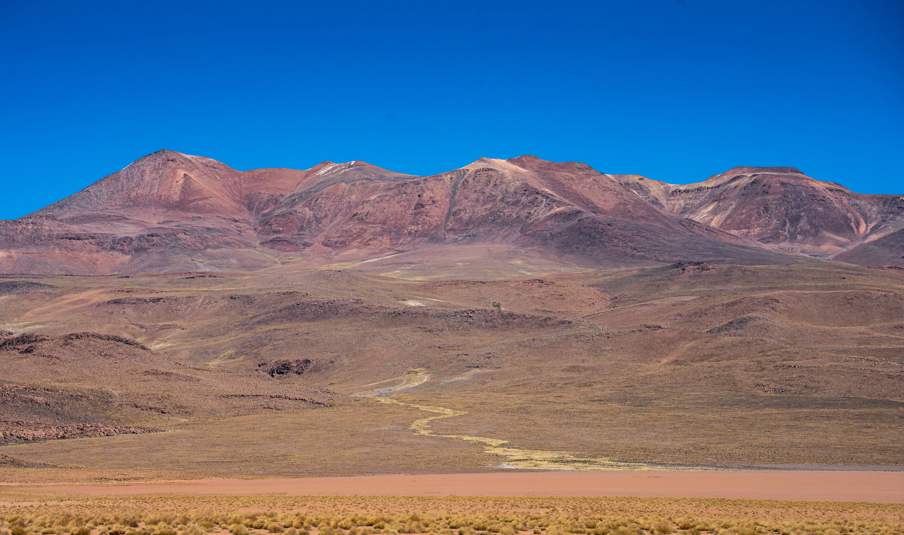
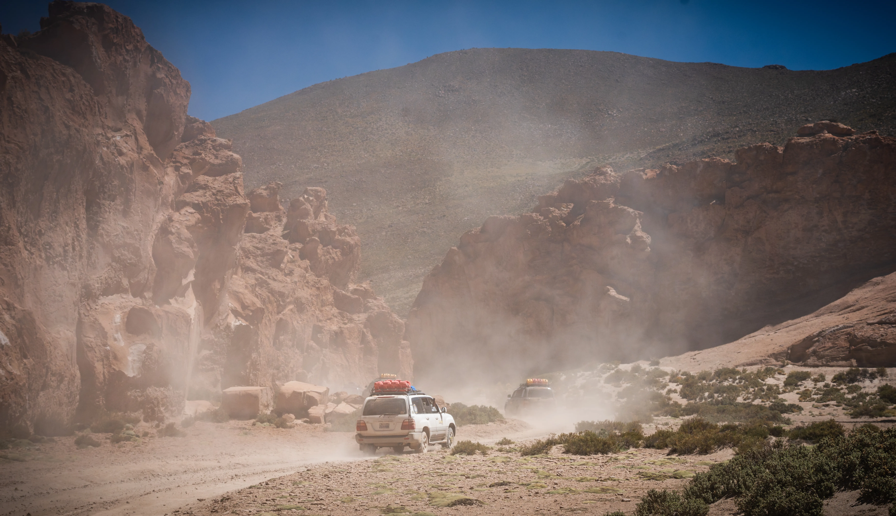
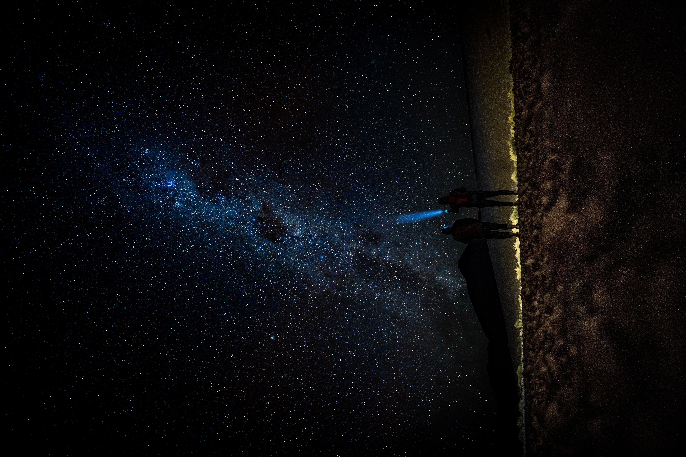

Salar de Uyuni — the world's largest salt flat at over 10,000 square kilometres. After rain, a thin layer of water turns the entire surface into a perfect mirror. At night, the stars feel close enough to touch.










